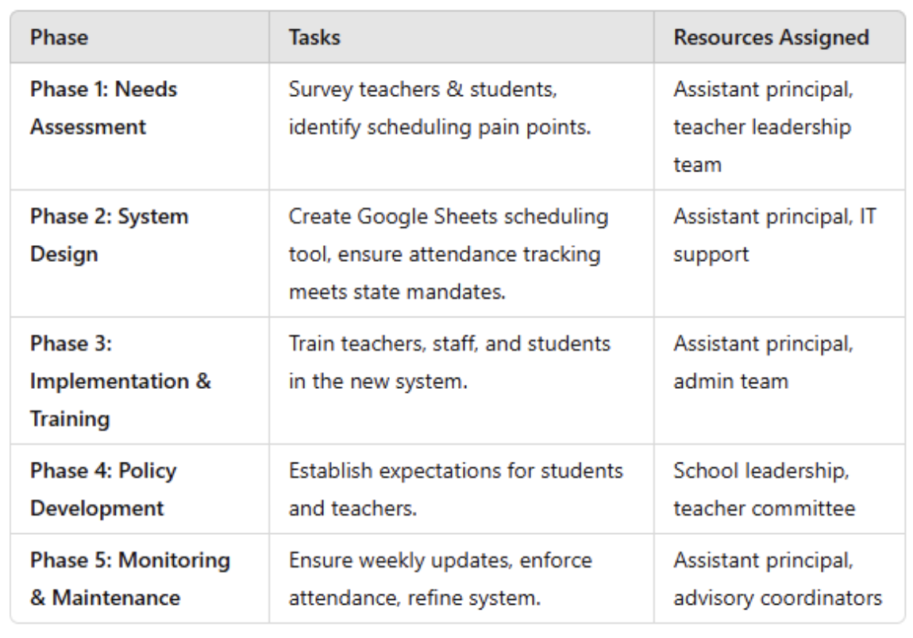
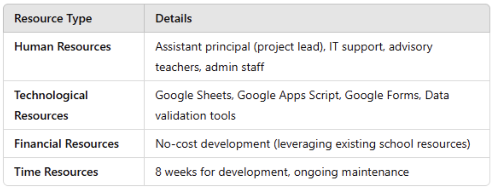
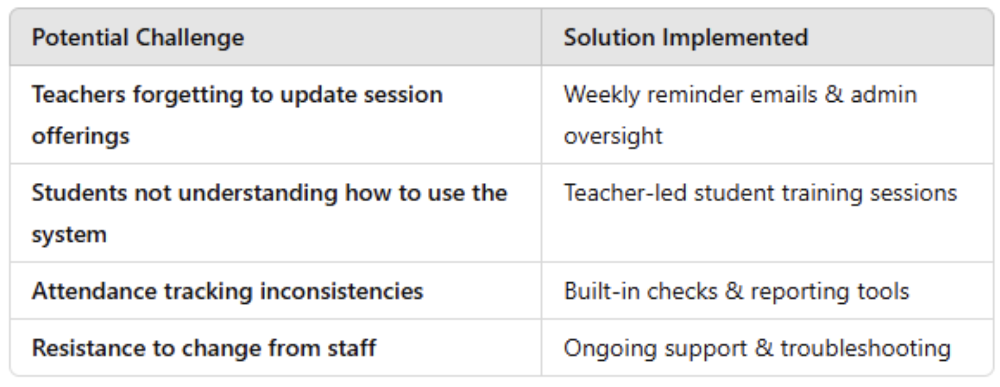
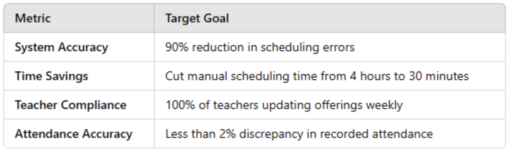
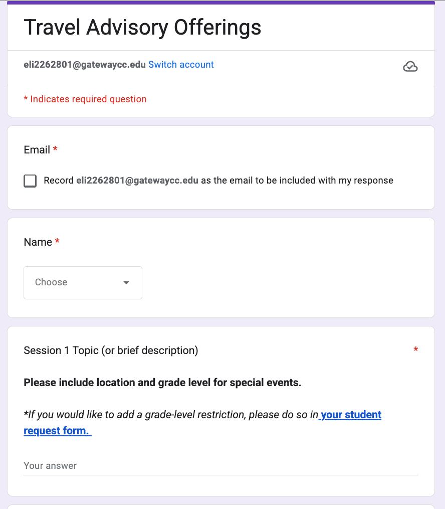
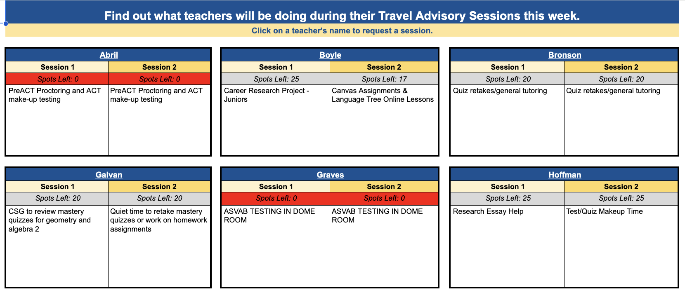
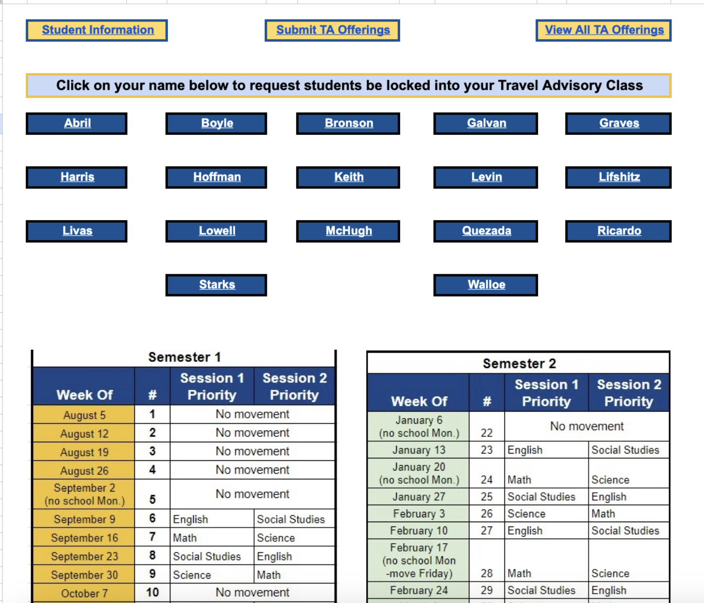
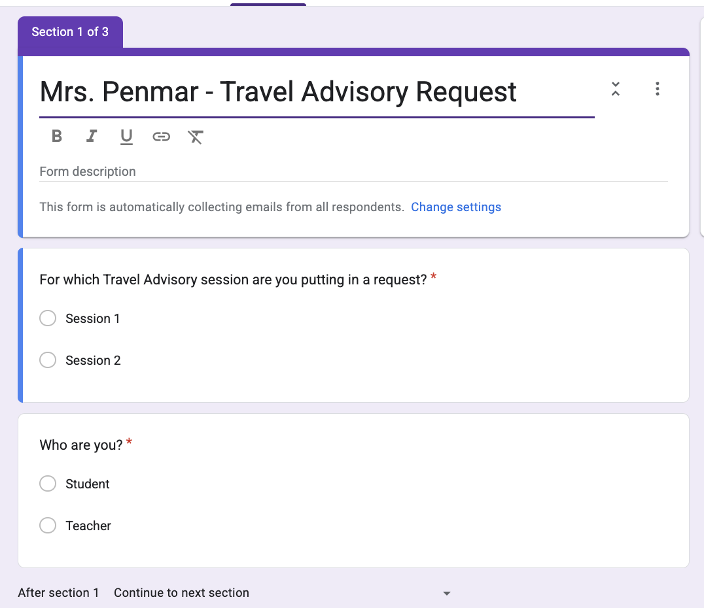
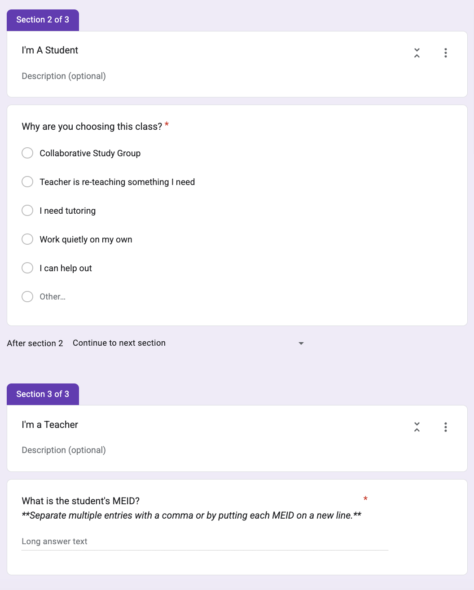
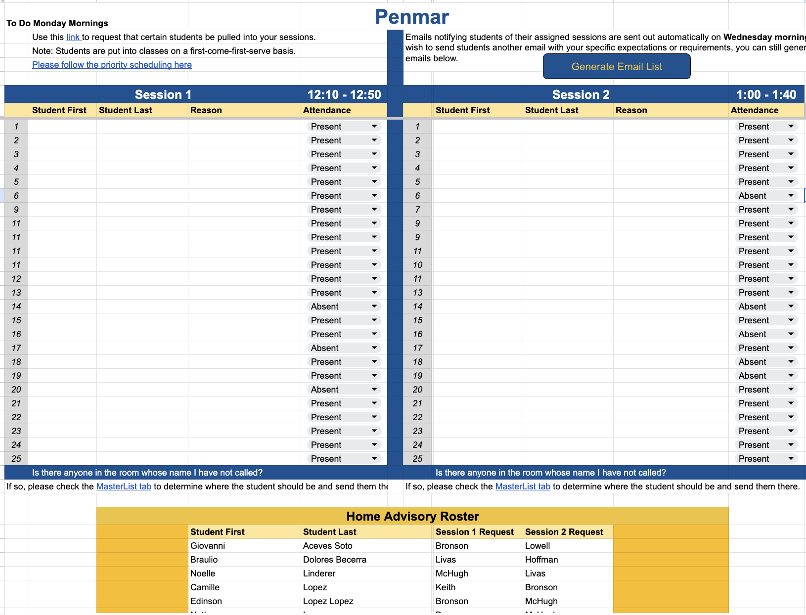

Project Manager
Flexible Scheduling System
A travel advisory system built in Google Sheets that matched students to the right teacher on the right day — reshaping advisory into a high-accountability, high-impact block.
The Plan and Execution
1. Identifying the Need for a New System
Survey findings showed that students wanted flexible scheduling aligned with their academic needs, while teachers needed a more efficient way to schedule targeted interventions and tutoring.
2. Compliance with State Attendance Mandates
The system had to meet state requirements for attendance tracking, which meant designing accurate teacher-side recording built into the same workflow used for scheduling.
3. System Development & User Experience
Google Sheets automation, data dashboards, student-friendly request interfaces, and teacher-side tools for mandating specific students were combined into a single, cohesive platform.
4. Establishing Clear Expectations
Teacher roles were defined for tutoring, mentoring, and monitoring. Students were trained on how to navigate the system and the behavior expectations that came with it.
5. Staff Training & Implementation
Training for office staff, workshops for teachers on scheduling and enforcement, and guidance for students ensured consistent adoption across the school.
6. Maintaining the System & Enforcing Compliance
Ongoing weekly updates, student-mandate capabilities, and continuous attendance monitoring kept the system healthy throughout the year.
Resource Management


Risk Management & Solutions

Performance Metrics

The Program in Action

Step 1 — Teachers publish offerings via a Google Form for student selection.

Step 2 — Requests are filtered into individual teacher schedules and a master schedule.

Step 3 — Teachers record attendance, which is reported to office staff for Student Information System entry.


